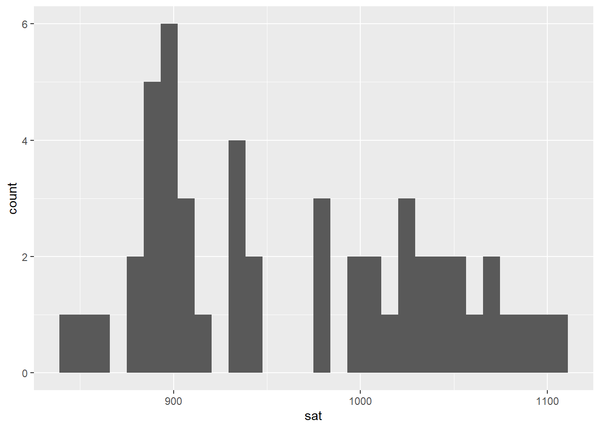
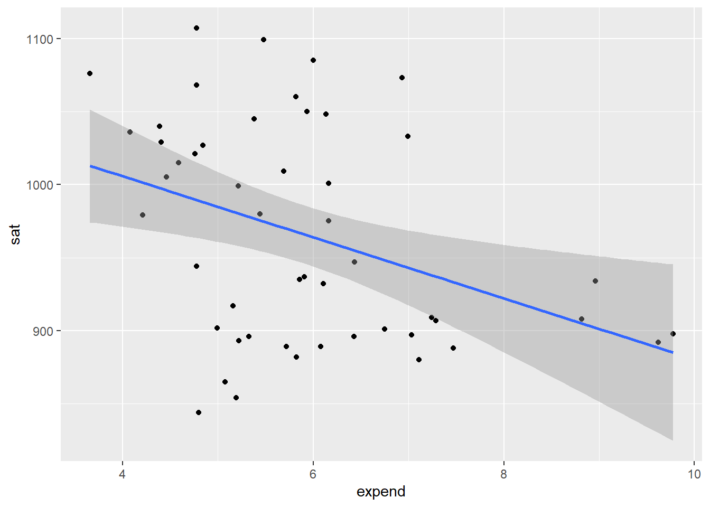
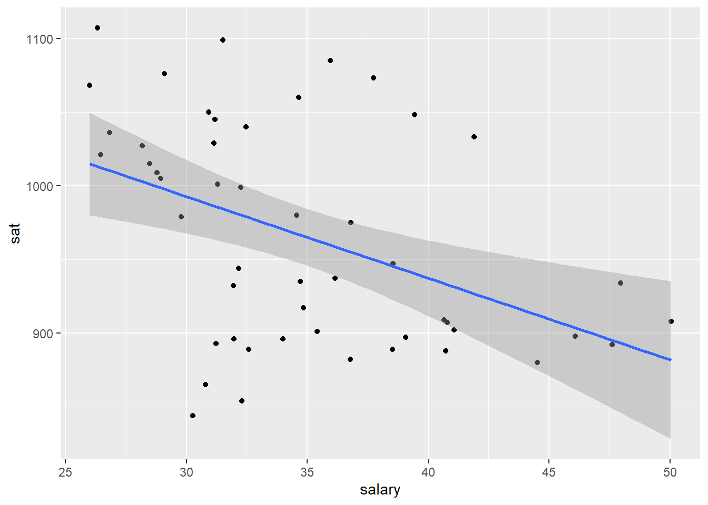
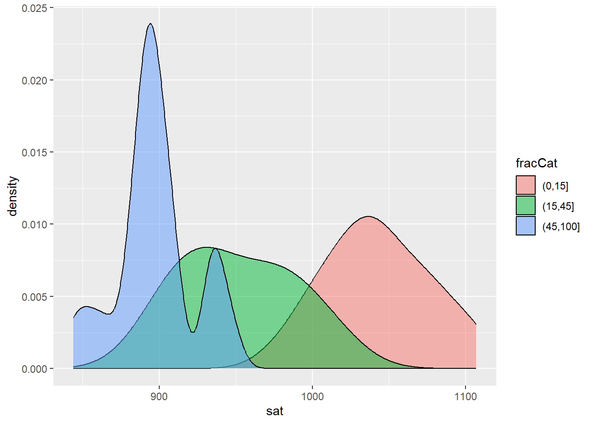
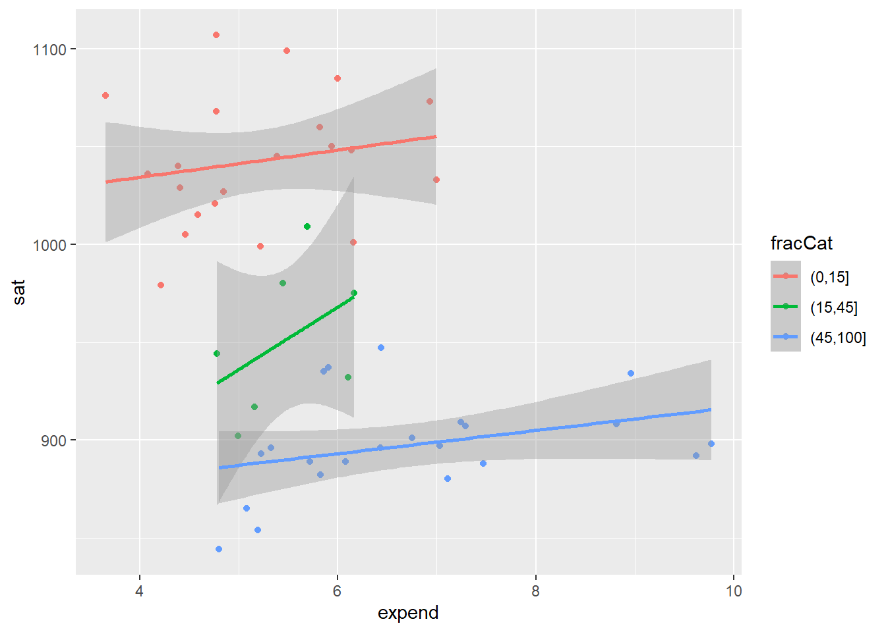

Use this file for practice with the mulivariate viz in-class activity. Refer to the class website for details.
13.1 Exercises (required)
The story
Though far from a perfect assessment of academic preparedness, SAT scores have historically been used as one measurement of a state’s education system. The education dataset contains various education variables for each state:
##load tidyverselibrary(tidyverse)
Warning: package 'tidyverse' was built under R version 4.4.2
Warning: package 'ggplot2' was built under R version 4.4.2
Warning: package 'tibble' was built under R version 4.4.2
Warning: package 'tidyr' was built under R version 4.4.2
Warning: package 'readr' was built under R version 4.4.2
Warning: package 'purrr' was built under R version 4.4.2
Warning: package 'dplyr' was built under R version 4.4.2
Warning: package 'stringr' was built under R version 4.4.2
Warning: package 'forcats' was built under R version 4.4.2
Warning: package 'lubridate' was built under R version 4.4.2
── Attaching core tidyverse packages ──────────────────────── tidyverse 2.0.0 ──
✔ dplyr 1.1.4 ✔ readr 2.1.5
✔ forcats 1.0.0 ✔ stringr 1.5.1
✔ ggplot2 3.5.1 ✔ tibble 3.2.1
✔ lubridate 1.9.4 ✔ tidyr 1.3.1
✔ purrr 1.0.2
── Conflicts ────────────────────────────────────────── tidyverse_conflicts() ──
✖ dplyr::filter() masks stats::filter()
✖ dplyr::lag() masks stats::lag()
ℹ Use the conflicted package (<http://conflicted.r-lib.org/>) to force all conflicts to become errors
# Import and check out dataeducation <-read.csv("https://mac-stat.github.io/data/sat.csv")head(education)
A codebook is provided by Danny Kaplan who also made these data accessible:
Exercise 1: SAT scores
Part a
Construct a plot of how the average sat scores vary from state to state. (Just use 1 variable – sat not State!)
ggplot(education, aes(x=sat))+geom_histogram()
`stat_bin()` using `bins = 30`. Pick better value with `binwidth`.

Part b
Summarize your observations from the plot. Comment on the basics: range, typical outcomes, shape. (Any theories about what might explain this non-normal shape?)
Based on this plot there is an approx. range of scores 825 to 1250. Most scores are closer to 900, with the data being right skewed.
Exercise 2: SAT Scores vs Per Pupil Spending & SAT Scores vs Salaries
The first question we’d like to answer is: Can the variability in sat scores from state to state be partially explained by how much a state spends on education, specifically its per pupil spending (expend) and typical teacher salary?
Part a
# Construct a plot of sat vs expend# Include a "best fit linear regression model" (HINT: method = "lm")ggplot(education, aes(x = expend, y = sat)) +geom_point() +geom_smooth(method ="lm")
`geom_smooth()` using formula = 'y ~ x'

# Construct a plot of sat vs salary# Include a "best fit linear regression model" (HINT: method = "lm")ggplot(education, aes(x = salary, y = sat)) +geom_point() +geom_smooth(method ="lm")
`geom_smooth()` using formula = 'y ~ x'

Part b
What are the relationship trends between SAT scores and spending? Is there anything that surprises you?
These charts show a weak relationship between the variables in both cases, but they indicate that as spending increases scores actually decrease. This doesn’t sound like it would make sense, but I wonder if there is increased spending in areas where the scores are already lower which would make sense.
Exercise 3: SAT Scores vs Per Pupil Spending and Teacher Salaries
Construct one visualization of the relationship of sat with salaryandexpend. HINT: Start with just 2 variables and tweak that code to add the third variable. Try out a few things!
ggplot(education, aes(y = sat, x = salary, color = expend)) +geom_point() +geom_smooth(method ="lm")
`geom_smooth()` using formula = 'y ~ x'
Warning: The following aesthetics were dropped during statistical transformation:
colour.
ℹ This can happen when ggplot fails to infer the correct grouping structure in
the data.
ℹ Did you forget to specify a `group` aesthetic or to convert a numerical
variable into a factor?
Exercise 4: Another way to Incorporate Scale
It can be tough to distinguish color scales and size scales for quantitative variables. Another option is to discretize a quantitative variable, or basically cut it up into categories.
Construct the plot below. Check out the code and think about what’s happening here. What happens if you change “2” to “3”?
ggplot(education, aes(y = sat, x = salary, color =cut(expend, 2))) +geom_point() +geom_smooth(se =FALSE, method ="lm")
Describe the trivariate relationship between sat, salary, and expend.
As expenditure (expend) and salary increase together, SAT scores decrease.
Exercise 5: Finally an Explanation
It’s strange that SAT scores seem to decrease with spending. But we’re leaving out an important variable from our analysis: the fraction of a state’s students that actually take the SAT. The fracCat variable indicates this fraction: low (under 15% take the SAT), medium (15-45% take the SAT), and high (at least 45% take the SAT).
Part a
Build a univariate viz of fracCat to better understand how many states fall into each category.
ggplot(education, aes(x=fracCat))+geom_bar()
Part b
Build 2 bivariate visualizations that demonstrate the relationship between sat and fracCat. What story does your graphic tell and why does this make contextual sense?
ggplot(education, aes(x = sat, fill = fracCat)) +geom_density(alpha =0.5)

The more students in a state that take the SAT, the lower the average scores tend to be. This is likely because if it is rarer to take the test, students who can score higher are going to be the only ones taking it.
Part c
Make a trivariate visualization that demonstrates the relationship of sat with expend AND fracCat. Highlight the differences in fracCat groups through color AND unique trend lines. What story does your graphic tell?
Does it still seem that SAT scores decrease as spending increases?
ggplot(education, aes(x = expend, y = sat, color = fracCat)) +geom_point() +geom_smooth(method ="lm")
`geom_smooth()` using formula = 'y ~ x'

This graphic helps show that as expenditure increases, the score does increase, so long as you take into account the percent of students in the state whom take the test. Once you separate the percent of participation, spending is shown to increase scores. This shows why it is important to have accurate visualizations and take into account all potential variables.
Part d
Putting all of this together, explain this example of Simpson’s Paradox. That is, why did it appear that SAT scores decrease as spending increases even though the opposite is true?
In states with lower participation in the SAT, expenditure is also lower. These states have higher SAT scores because of self-selection.
Source Code
---title: "Mulivariate Viz"---Use this file for practice with the **mulivariate viz** in-class activity.Refer to the class website for details.## Exercises (required)### The story {.unnumbered}Though far from a perfect assessment of academic preparedness, SAT scores have historically been used as one measurement of a state's education system.The `education` dataset contains various education variables for each state:```{r}##load tidyverselibrary(tidyverse)# Import and check out dataeducation <-read.csv("https://mac-stat.github.io/data/sat.csv")head(education)```A codebook is provided by Danny Kaplan who also made these data accessible:### Exercise 1: SAT scores {.unnumbered}#### Part a {.unnumbered}Construct a plot of how the average `sat` scores vary from state to state.(Just use 1 variable -- `sat` not `State`!)```{r}ggplot(education, aes(x=sat))+geom_histogram()```#### Part b {.unnumbered}Summarize your observations from the plot.Comment on the basics: range, typical outcomes, shape.(Any theories about what might explain this non-normal shape?)- Based on this plot there is an approx. range of scores 825 to 1250. Most scores are closer to 900, with the data being right skewed.### Exercise 2: SAT Scores vs Per Pupil Spending & SAT Scores vs Salaries {.unnumbered}The first question we'd like to answer is: Can the variability in `sat` scores from state to state be partially explained by how much a state spends on education, specifically its per pupil spending (`expend`) and typical teacher `salary`?#### Part a {.unnumbered}```{r}# Construct a plot of sat vs expend# Include a "best fit linear regression model" (HINT: method = "lm")ggplot(education, aes(x = expend, y = sat)) +geom_point() +geom_smooth(method ="lm")``````{r}# Construct a plot of sat vs salary# Include a "best fit linear regression model" (HINT: method = "lm")ggplot(education, aes(x = salary, y = sat)) +geom_point() +geom_smooth(method ="lm")```#### Part b {.unnumbered}What are the relationship trends between SAT scores and spending?Is there anything that surprises you?- These charts show a weak relationship between the variables in both cases, but they indicate that as spending increases scores actually decrease. This doesn't sound like it would make sense, but I wonder if there is increased spending in areas where the scores are already lower which would make sense.### Exercise 3: SAT Scores vs Per Pupil Spending *and* Teacher Salaries {.unnumbered}Construct *one* visualization of the relationship of `sat` with `salary` *and* `expend`.HINT: Start with just 2 variables and tweak that code to add the third variable.Try out a few things!```{r}ggplot(education, aes(y = sat, x = salary, color = expend)) +geom_point() +geom_smooth(method ="lm")```### Exercise 4: Another way to Incorporate Scale {.unnumbered}It can be tough to distinguish color scales and size scales for quantitative variables.Another option is to *discretize* a quantitative variable, or basically cut it up into *categories*.Construct the plot below.Check out the code and think about what's happening here.What happens if you change "2" to "3"?```{r eval = FALSE}ggplot(education, aes(y = sat, x = salary, color = cut(expend, 2))) + geom_point() + geom_smooth(se = FALSE, method = "lm")```Describe the trivariate relationship between `sat`, `salary`, and `expend`.- As expenditure (expend) and salary increase together, SAT scores decrease.### Exercise 5: Finally an Explanation {.unnumbered}It's strange that SAT scores *seem* to decrease with spending.But we're leaving out an important variable from our analysis: the fraction of a state's students that actually take the SAT.The `fracCat` variable indicates this fraction: `low` (under 15% take the SAT), `medium` (15-45% take the SAT), and `high` (at least 45% take the SAT).#### Part a {.unnumbered}Build a univariate viz of `fracCat` to better understand how many states fall into each category.```{r}ggplot(education, aes(x=fracCat))+geom_bar()```#### Part b {.unnumbered}Build 2 bivariate visualizations that demonstrate the relationship between `sat` and `fracCat`.What story does your graphic tell and why does this make contextual sense?```{r}ggplot(education, aes(x = sat, fill = fracCat)) +geom_density(alpha =0.5)```- The more students in a state that take the SAT, the lower the average scores tend to be. This is likely because if it is rarer to take the test, students who can score higher are going to be the only ones taking it.#### Part c {.unnumbered}Make a trivariate visualization that demonstrates the relationship of `sat` with `expend` AND `fracCat`.Highlight the differences in `fracCat` groups through color AND unique trend lines.What story does your graphic tell?\Does it still seem that SAT scores decrease as spending increases?```{r}ggplot(education, aes(x = expend, y = sat, color = fracCat)) +geom_point() +geom_smooth(method ="lm")```- This graphic helps show that as expenditure increases, the score does increase, so long as you take into account the percent of students in the state whom take the test. Once you separate the percent of participation, spending is shown to increase scores. This shows why it is important to have accurate visualizations and take into account all potential variables.#### Part d {.unnumbered}Putting all of this together, explain this example of **Simpson’s Paradox**.That is, why did it appear that SAT scores decrease as spending increases even though the *opposite* is true?- In states with lower participation in the SAT, expenditure is also lower. These states have higher SAT scores because of self-selection.